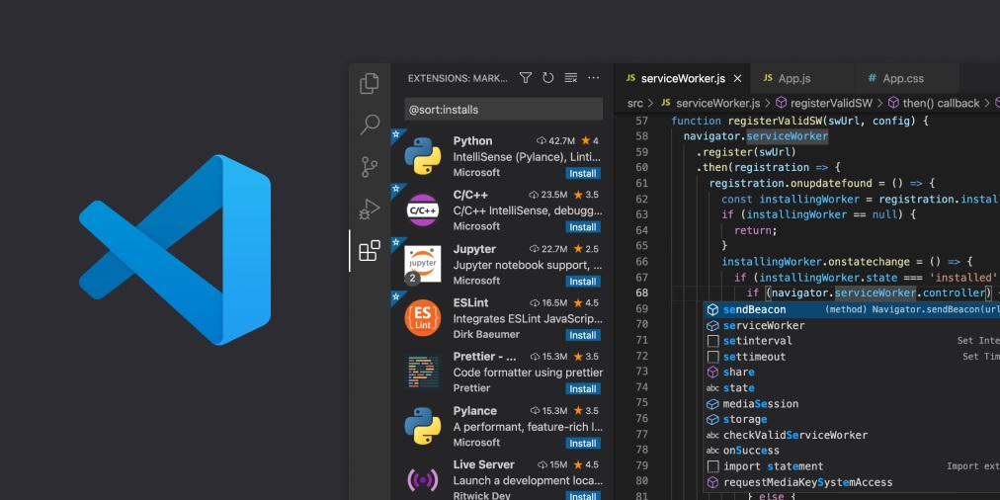
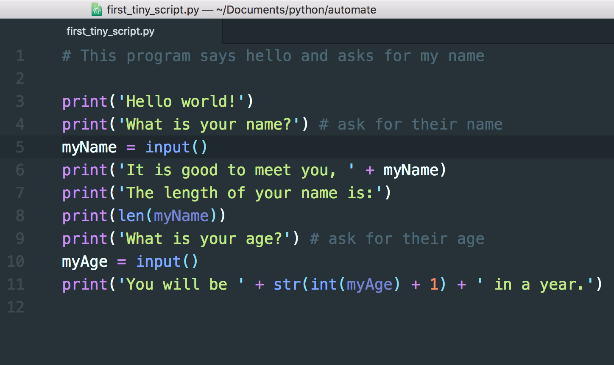
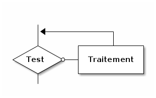
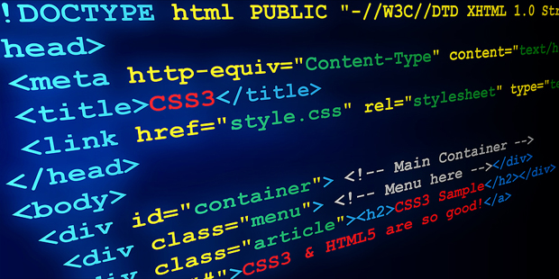
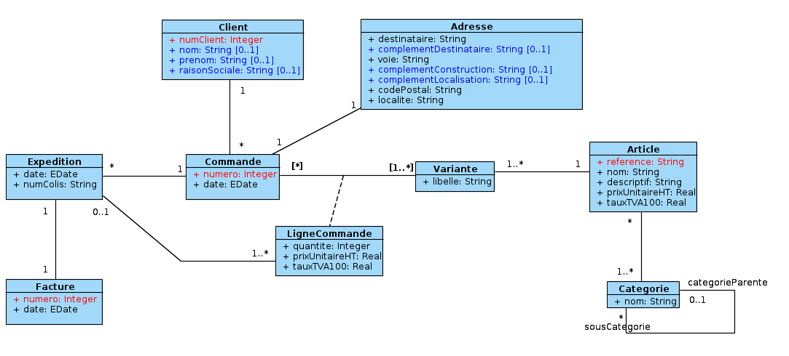
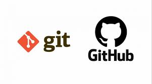

Bloc de Compétences 3 // Niveau 1
Créer des outils et applications informatiques pour les R&T
Démarche réflexive sur le développement de scripts d'automatisation, la gestion de bases de données et le déploiement d'interfaces Web.
AC13.01 // Outils Informatiques
Utiliser un système informatique et ses outils
- Ce que j'ai fait : J'ai configuré mes environnements de développement, utilisé des utilitaires CLI système et manipulé des éditeurs de code avancés au quotidien.
- Pourquoi je l'ai fait : Pour optimiser mon poste de travail, accélérer mon flux de développement et interagir efficacement avec les ressources de la machine.
- Comment je l'ai fait : En appliquant les principes étudiés en introduction à l'informatique, via l'usage de VS Code, de terminaux intégrés et de gestionnaires de paquets.
- Mes difficultés : Maîtriser parfaitement les redirections de flux d'entrée/sortie (`>`, `|`) en ligne de commande pour enchaîner les tâches complexes.
- Ce que j'en ai appris : Que le terminal est l'outil le plus puissant d'un informaticien dès lors qu'on en comprend la logique profonde.
- Ce que je ferais autrement : Créer des alias personnalisés pour mes commandes redondantes afin d'automatiser mes routines dès le début de l'année.
Trace Pertinente

[Capture CLI / Configuration Environnement]
AC13.02 // Programmation Fondamentale
Lire, exécuter, corriger et modifier un programme
- Ce que j'ai fait : J'ai analysé et mis à jour des scripts de tri de données issus de data.gouv.fr et codé sous forte contrainte temporelle (Nuit du Code).
- Pourquoi je l'ai fait : Pour corriger des anomalies logiques au sein de scripts existants et adapter le traitement de données à de nouveaux besoins applicatifs.
- Comment je l'ai fait : En exploitant les bases de Python acquises en NSI et consolidées dans le module R1.07 (Algorithmique et Programmation).
- Mes difficultés : Retracer la logique d'un code complexe écrit par un tiers sans aucune documentation ou commentaire initial.
- Ce que j'en ai appris : Que le débogage méthodique pas-à-pas est une compétence cruciale, supérieure à la simple écriture de code brut.
- Ce que je ferais autrement : Imposer l'usage systématique de commentaires et de docstrings à chaque fonction modifiée pour faciliter le travail de l'équipe.
Trace Pertinente

[Extrait Script Python Débogué]
AC13.03 // Algorithmique
Traduire un algorithme, dans un langage donné
- Ce que j'ai fait : J'ai formalisé des logiques métiers sous forme de pseudo-code, puis je les ai traduites en structures Python fonctionnelles.
- Pourquoi je l'ai fait : Pour dissocier la réflexion pure (logique de résolution) des contraintes strictes de syntaxe d'un langage informatique.
- Comment je l'ai fait : En transposant des structures conditionnelles imbriquées et des boucles (`while`/`for`) définies lors de la SAÉ 1.04.
- Mes difficultés : Traduire proprement des algorithmes récursifs ou des structures imbriquées complexes sans commettre d'erreur d'indentation.
- Ce que j'en ai appris : Qu'un algorithme bien pensé et documenté sur papier se traduit sans effort dans n'importe quel langage de programmation.
- Ce que je ferais autrement : Valider systématiquement mon pseudo-code par un test d'exécution "à la main" avant de commencer le codage.
Trace Pertinente

[Pseudo-Code vs Traduction Python]
AC13.04 // Web Dev
Connaître l’architecture et les technologies d’un site Web
- Ce que j'ai fait : J'ai conçu la structure sémantique et la feuille de style avancée de ce site web adaptatif (responsive design).
- Pourquoi je l'ai fait : Pour matérialiser mon portfolio dans le cadre de la SAÉ 14 et prouver ma compréhension de l'affichage de contenu côté client.
- Comment je l'ai fait : En exploitant les cours du module Web (R1.09), en codant en HTML5 sémantique et en implémentant du CSS3 avancé (variables, flexbox).
- Mes difficultés : Harmoniser l'affichage et préserver la fluidité esthétique lors des changements abrupts de résolution (breakpoints sur mobiles).
- Ce que j'en ai appris : Que le développement web exige une organisation irréprochable des sélecteurs pour éviter les conflits d'héritage de styles.
- Ce que je ferais autrement : Utiliser des frameworks comme Bootstrap de manière encore plus native pour standardiser l'UI dès les premières phases du projet.
Trace Pertinente

[Extrait HTML Structurel / Fichier CSS]
AC13.05 // Gestion de Données
Choisir les mécanismes de gestion de données adaptés
- Ce que j'ai fait : J'ai structuré des modèles relationnels basiques, modélisé des tables de stockage et analysé les structures de fichiers adaptées aux scripts.
- Pourquoi je l'ai fait : Pour garantir l'intégrité, la rapidité d'accès et la cohérence des données manipulées par mes outils d'automatisation.
- Comment je l'ai fait : En m'appuyant sur les fondamentaux des bases de données étudiés lors du second semestre, en structurant des modèles conceptuels.
- Mes difficultés : Établir correctement les relations de cardinalité complexes sans dupliquer inutilement l'information dans les tables.
- Ce que j'en ai appris : Qu'une mauvaise modélisation initiale des données paralyse l'application future, peu importe la qualité du code de programmation.
- Ce que je ferais autrement : Valider mon modèle conceptuel (MCD) auprès de mes pairs avant de lancer l'écriture des requêtes de création.
Trace Pertinente

[Schéma Relationnel / Modèle MCD]
AC13.06 // Travail Collaboratif
S’intégrer dans un environnement propice au travail collaboratif
- Ce que j'ai fait : J'ai collaboré en équipe lors des SAÉ, travaillé en logistique d'entrepôt (CEVA) et maintenu une discipline d'entraînement rigoureuse.
- Pourquoi je l'ai fait : Pour acquérir des automatismes d'organisation collective et développer une régularité de travail essentielle aux projets d'envergure.
- Comment je l'ai fait : En synchronisant les tâches avec mes équipiers en SAÉ et en respectant scrupuleusement les cadences et consignes en entreprise.
- Mes difficultés : Ajuster la répartition du travail lorsque les niveaux d'implication ou les plannings des membres du groupe divergeaient.
- Ce que j'en ai appris : Que la transparence et la communication régulière sont indispensables pour maintenir l'efficacité d'un collectif (équipe de dev ou brigade logistique).
- Ce que je ferais autrement : Mettre en place un outil de suivi de projet commun (Git / Kanban) dès le premier jour de la SAÉ pour éviter les doublons.
Trace Pertinente

[Capture Suivi de Projet / Badge Pro]